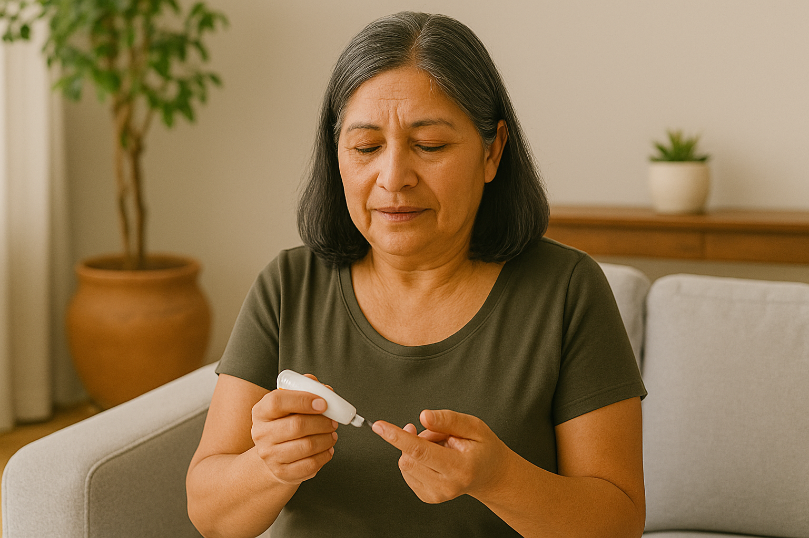

Nuevo
Impacto de la carga de cuidados en el control glucémico de mujeres con diabetes tipo 2
Estudio que revela cómo las responsabilidades de cuidado familiar afectan negativamente la adherencia al tratamiento y el autocuidado en mujeres con diabetes, proponiendo intervenciones específicas.
Leer más